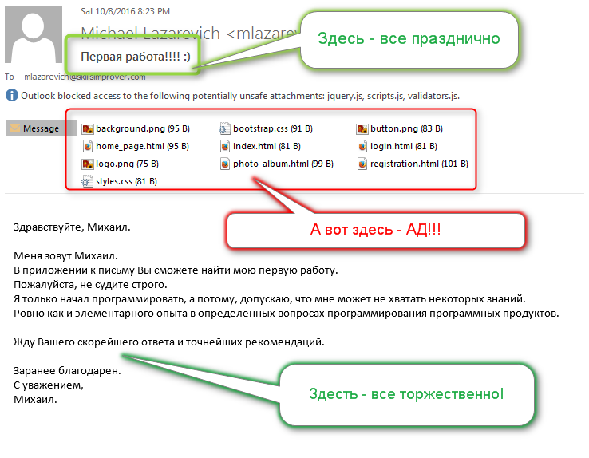

Да ты КЭП, дружище!
Вау! Сайт по программированию учит создавать папки!
Надо срочно поискать в сети юридическую консультацию,
которая в качестве справочной информации выдаст мне - НЕ УБИЙ!
Расходимся, господа, нас нае....
Прервемся, пожалуй...
Скажите, друзья, попал ли я хотя бы в одно из сарказмо-ругательств, которые вы выдали на всю комнату в голос,
после того как забрели на эту страницу?
Ну конечно же попал! Ведь вы сюда пришли учиться программировать, вы хотите информации по Java, а вместо этого я выдаю вам информацию по предмету
Информатика для ясельных и младших групп дошкольных учреждений с математическим уклоном
Ну простите меня, все те 99.9% процентов, кто знает, что папки нужно создавать. Однако я не знаю почему — по какому-то нелепому стечению обстоятельств, или по чьей-то злой воле, но раз в пол года (по статистике — примерно в каждой второй группе) я стабильно получаю письмо с первой работой, которая выглядит вот так:
Это всегда очень печально для меня. Потому что вместо того, чтобы оценивать правильность реализации, я должен сказать человеку:
Я не вижу работу, чувак!
Я вижу набор файликов, которые сейчас все сохраню себе на диск, и которые сделают фарш из моей файловой системы. Я вижу картинки, HTML-ы и JavaScript-ы, но работу, то есть — проект — ты мне не прислал!
И, уж если говорить совсем обидные фразы, я вижу человека, который
УЖЕ ПРОГРАММИРУЕТ, НО ЕЩЕ НЕ НАЧАЛ
Эта фраза — абсурд!
— скажете вы. Да... Да, друзья, эта фраза — абсурд, но для абсурдной ситуации — абсурдная фраза
 .
.
Подумайте сами — вы уже изучаете синтаксис языка программирования, интересуетесь, какие технологии, библиотеки и фреймворки в данный момент времени лучше всего подходят к этому языку, ищете в сети книги, статьи и видео-уроки, которые по праву считаются бестселлерами в области вашего языка или платформы
И ДАЖЕ, БЛИН, ПРИСЫЛАЕТЕ ПЕРВУЮ РАБОТУ НА ПРОВЕРКУ!!!
Но при этом, вы не заботитесь о том, чтобы создать для этой работы контейнер! Ту внешнюю оболочку, которую вы должны в будущем наполнить смыслом, функциями и пользовательским интерфейсом.
Вы начинаете свой путь с точки назначения, господа... А значит, вы сто процентов пойдете не в ту сторону
.
Но будем ли мы заканчивать текст такой глупой ошибки (которую, еще раз повторюсь, практически и не совершает никто)
на такой трагической интонации?
Интонации, от которой отдает агрессией, непонятными истеричными визгами,
и даже некоторым снисходительно-унижающим тоном старшего брата
?
Конечно же нет!
Вместо этого, я порекомендую вам лучший, на мой взгляд, видео-tutorial, который учит не только тому, что вначале работы над каждым новым проектом нужно первым делом создавать корневой каталог. Он учит большему.
Он показывает настроение, с которым нужно начинать новый проект.
Он показывает настроение,
С КОТОРЫМ НУЖНО НАЧИНАТЬ ВООБЩЕ ВСЕ!
Наслаждайтесь, господа и — добро пожаловать в профессию.
Но таки я вас умоляю, не смотрите, как это парень закончил, а то у вас тут же на месте пропадет вся мотивация
.